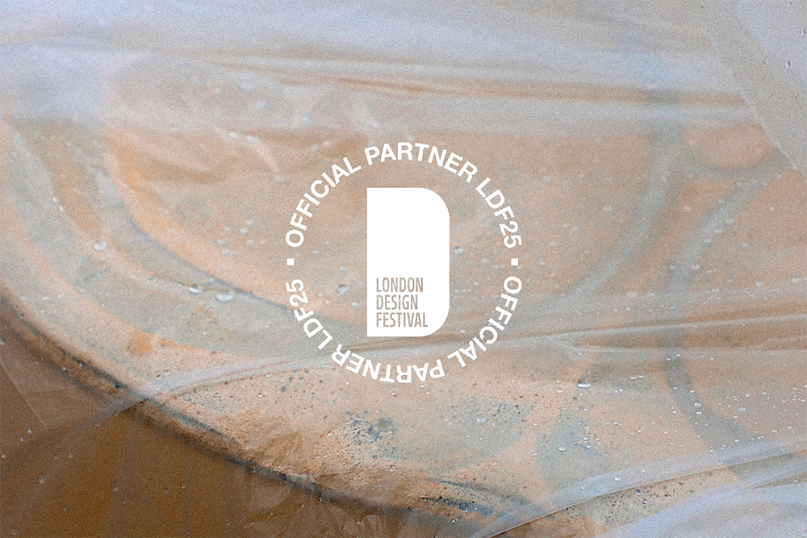
Latest | Latest updates and highlights from Wernacular
PROJECTS
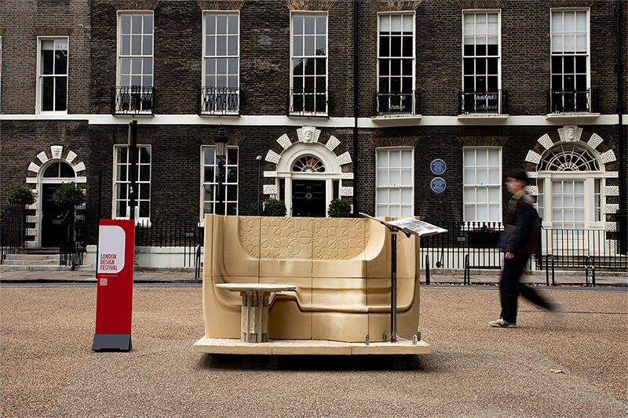
Impressions and Nomadism | Installation at London Design Festival - 2025
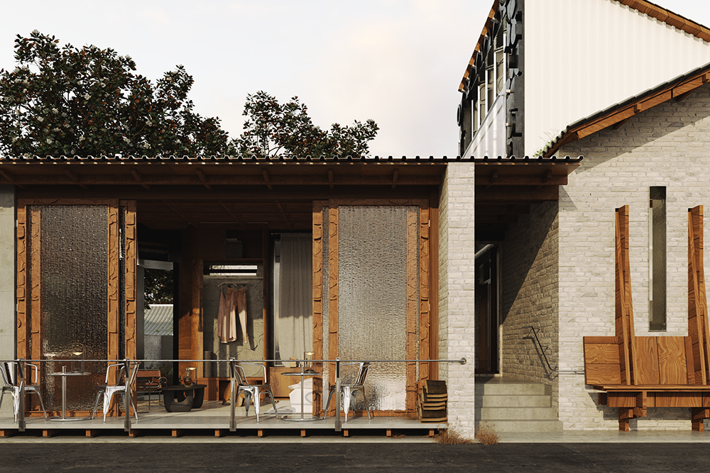
HOUSE 155 | Guest House Beijing - 2024
AND MORE...

ABOUT | Learn more about our studio philosophy

CONTACT | Get in touch with us
Digital Fabrication 数字化建造 Customisation 客制化 Impression 印象
Latest
Latest updates and highlights from Wernacular.
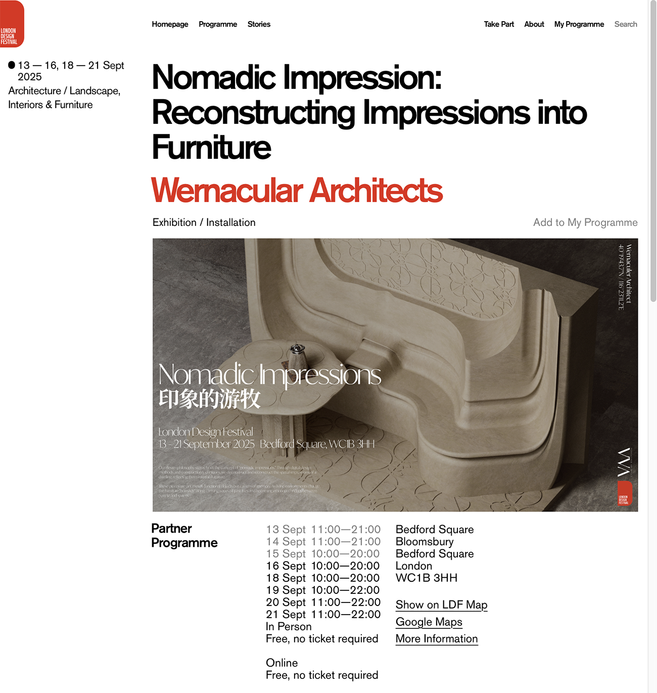
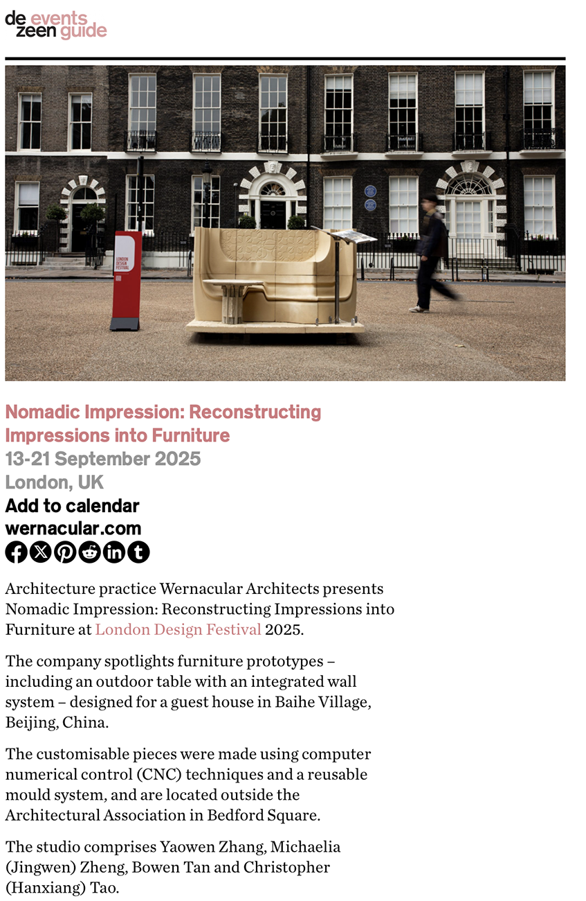
Impressions and Nomadism
Team Members
- Yaowen Zhang
- Michaelia (Jingwen) Zheng
- Bowen Tan
- Christopher (Hanxiang) Tao
Cooperative Partners
- Tai He Ying Chuang
- Polcrete Ltd UK
- Xie's Technology Development Co. Ltd
Special Thanks
- Architectural Association - Digital Prototype Lab
- Steven (Shengtao) Xia
- Jennifer Yang
HOUSE 155
Guest House Beijing - 2024
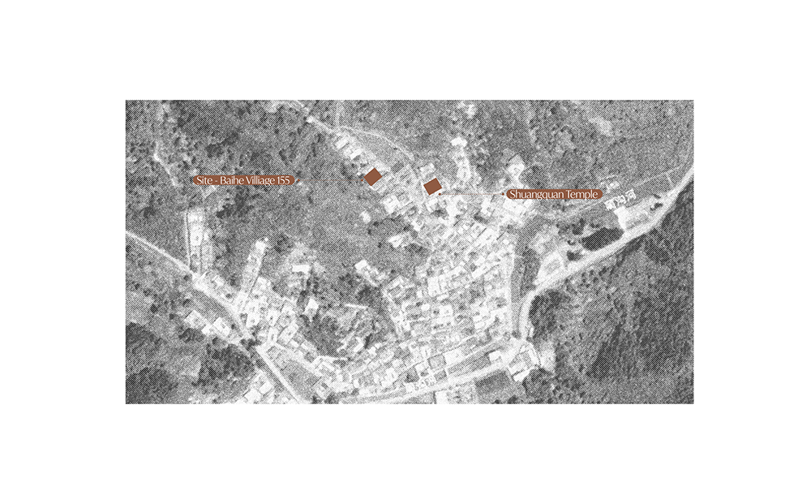
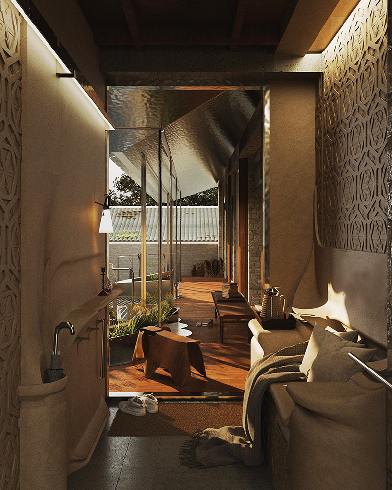
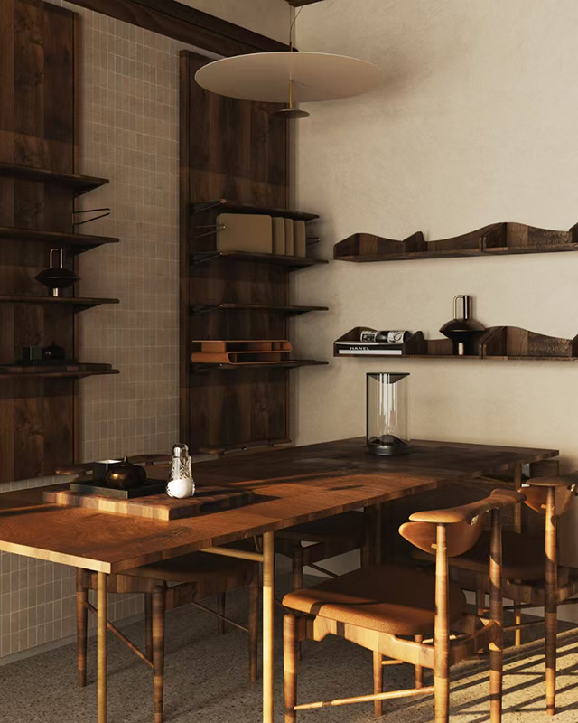
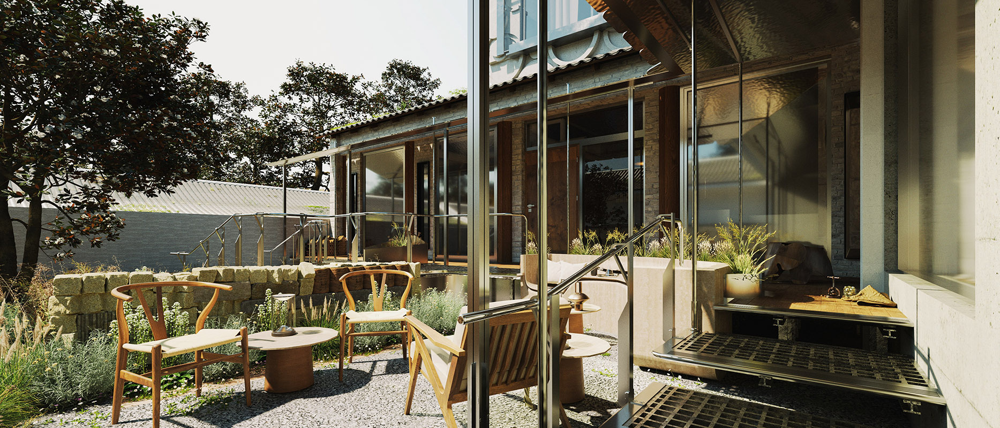
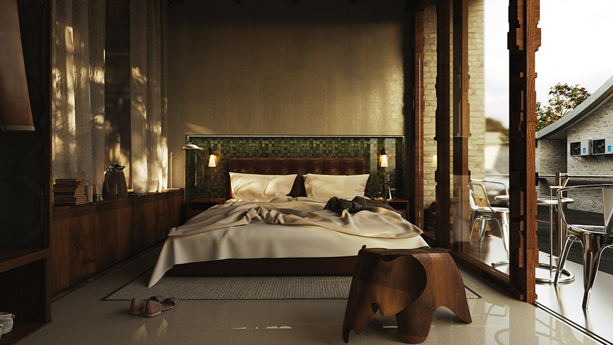
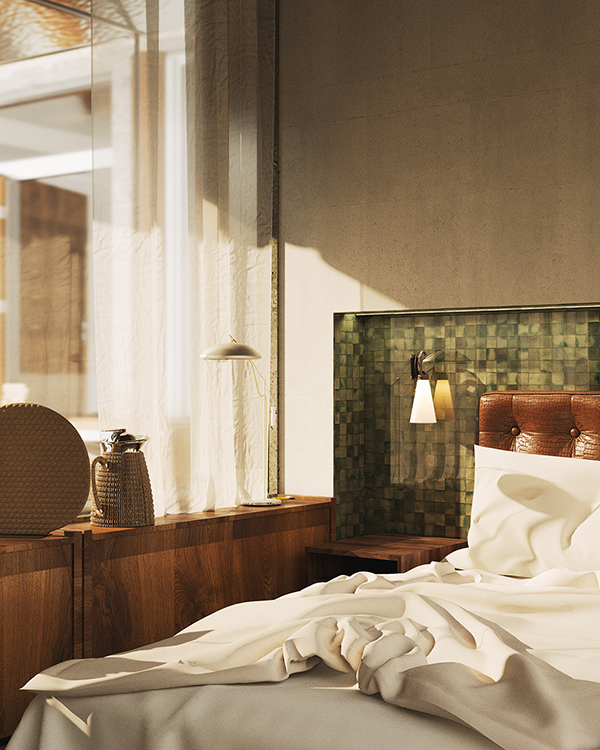
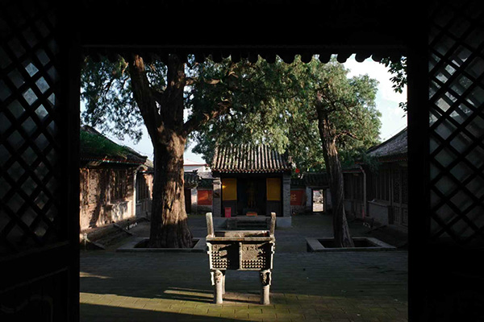
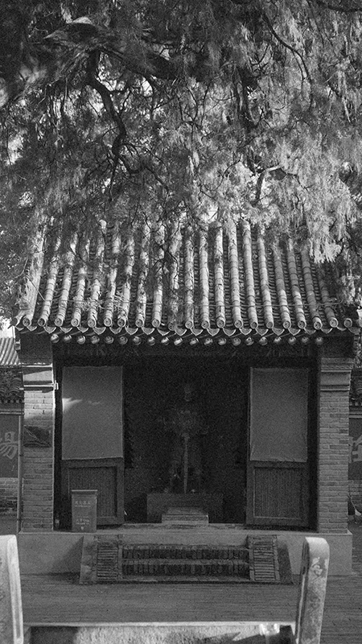
Baihe Village 百合村
Changping District 昌平区
Beijing 北京
China 中国
About
Wernacular is an architecture and design studio exploring how contemporary expression can meaningfully merge with local culture. Our name (文), blending “W” (from our three founders) and “vernacular,” reflects our mission to redefine contextual design through a personal lens.
We approach architecture as a dialogue between memory, culture, and environment, creating work that is distinctive yet rooted in place. Buildings and furniture are more than functional—they carry impressions and memories, connecting people to their surroundings. Inspired by Zumthor, who calls architecture a container of atmosphere, and Pallasmaa, who emphasizes embodied experience, we see place as alive through perception, memory, and movement.
Our work revives cultural roots and everyday authenticity. Rather than following universal templates, we create architecture that responds to nature, society, and individual experience, harmonizing with its environment and resonating with human emotion.